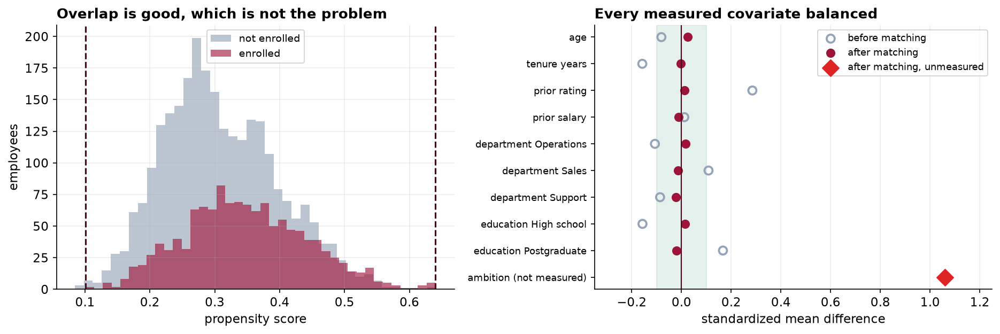
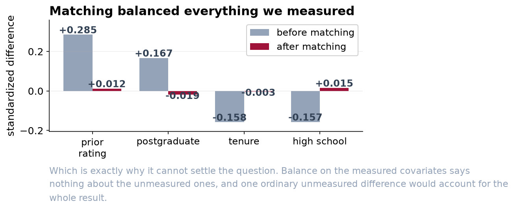

We Cannot Say the Training Program Works
That is not the same as saying it does not. It is a statement about what this data can and cannot settle, and the difference matters for the budget decision.
Recommendation
The headline comparison, that people who took the training grew their salary 1.8 points faster, cannot be presented as an effect of the training. Our best adjusted estimate is 1.7 points, and we can show that a single unmeasured difference between the two groups, of an entirely ordinary size, would account for all of it. Do not renew the budget on this evidence, and do not cancel on it either. Both decisions would be claiming to know something we do not.
What we did
Employees chose whether to enroll, so the two groups are not comparable to begin with. The standard remedy is to pair each participant with a non-participant who looks the same on everything recorded before they enrolled: department, education, age, tenure, last year's performance rating and salary. We did that, and we did it well.
The pairing worked. On every one of those six characteristics the two groups are now indistinguishable, to a tolerance about four times tighter than the usual standard. A second, quite different method gave the same answer. If the story ended there this memo would read very differently.


The problem we cannot solve with this data
Pairing removes differences in the things we measured. It does nothing about the things we did not, and the obvious candidate here is not subtle: how much somebody wants to get ahead. That makes a person both more likely to sign up for management training and more likely to get a raise, and it appears nowhere in our systems.
We can put a number on how much that would have to matter. For the entire 1.7-point difference to be explained by such a characteristic, it would need to be worth about 1.2 points of salary growth per standard deviation and differ between the two groups by about 1.4 standard deviations. Neither figure is extreme. Ask any manager whether the people who volunteer for management training are noticeably more driven than those who do not, and you have your answer.
Two things would make this answerable. Randomize places when the program is oversubscribed, which costs nothing and turns the next cohort into a real experiment. Or record something about motivation before enrollment, such as whether the employee had already asked about promotion, so the adjustment has something to work with.
What we would say publicly
That the program is popular, that participants do better afterwards, and that we have not established the program is the reason. That is a defensible sentence and it is the most this data supports. A report claiming a 1.7-point return would not survive a competent challenge, and it would be quoted for years.